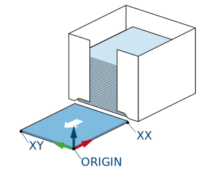

すべてのステーションにはユーザ座標系が関連付けられており、教示された経路はそのユーザ座標系に関連しています。 ユーザ座標系は、[ユーザ座標系] 選択の横にある [歯車] アイコンを押してアクセスできるスマートペンダントのインターフェイスを使用して設定できます。
適切な操作のために、ディスペンサー(固定位置)ステーションのユーザ座標系は、セパレーターが配置される表面 (セパレーターの下) のいずれかの角(できれば、セパレーターのサイズが変更されても移動しない角) でティーチングする必要があります。 X 軸と Y 軸は、右手の法則に従って Z 軸が上向きになるように、セパレーターの 2 つの側面に沿ってティーチングする必要があります。

ティーチングでは、ティーチングに使用するツールの位置を表す正しいツール番号が選択されていることを確認してください。 適切な位置に到達するのが難しい場合は、ユーザ座標系の位置に製品を配置し、製品の上にティーチングすることができます。 ティーチングが完了したら、ユーザ座標系の Z 値から製品の高さを引きます。